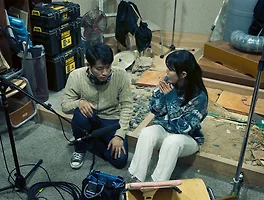

매거진 삼삼오오 · 프리뷰
허밍
기억의 사잇길에서

기억의 사잇길에서
녹음기사이자 사운드 믹싱 감독인 성현은 일 년 전 촬영이 끝난 작품의 후시녹음을 맡게 된다. 하지만 작품의 주인공이었던 배우 미정은 이미 세상을 떠났다. 더욱이 미정의 애드리브로 구성된 마지막 장면 속 대사를 기억하는 이는 아무도 없다. 녹음 대역을 맡은 민영이 녹음실을 찾지만 감독은 나타나지 않고, 오래된 녹음 장비마저 말썽이다. 성현은 과거와 현재, 꿈과 현실, 영화의 안팎을 오가며 혼란스러운 일들을 겪는다. 성현과 미정, 민영이 있던 촬영장과 녹음실에는 그들의 기억이 한데 섞여 유령처럼 배회한다.
성현은 영화를 완성시키기 위해, 또 영화를 완성함으로써 한 시절을 지나쳐 버리기 위해 분투한다. 소실되어버린 대사를 되찾고자 점멸하는 기억들을 더듬으며 성현은 마주하기 꺼려졌던 것들을 또다시 들여다보고, 사라져 버린 것들을 한 번 더 떠올리고, 타인이라는 거대한 미스터리에 다시금 도전한다. 성현의 기억과 미정의 과거는 잃어버린 것들의 단서가 되어 폐허에 생명력을 불어넣는다.
<허밍>은 기억의 사잇길에서 여러 축들의 대립항을 자유로이 오간다. 그러면서 영화를 만들고, 살아남고, 무언가를 추억하는 일의 기쁨과 슬픔을 면밀히 들여다본다. 그러다 환상이 돌고 도는 가운데에서, 마침내 삶의 흔적을 가만가만 되짚어보는 신비에 대해 말한다.
- 오오극장 관객프로그래머 김주리